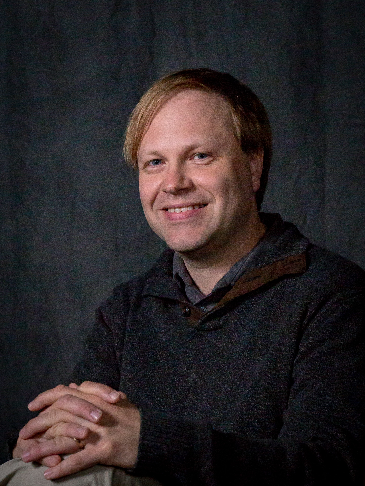
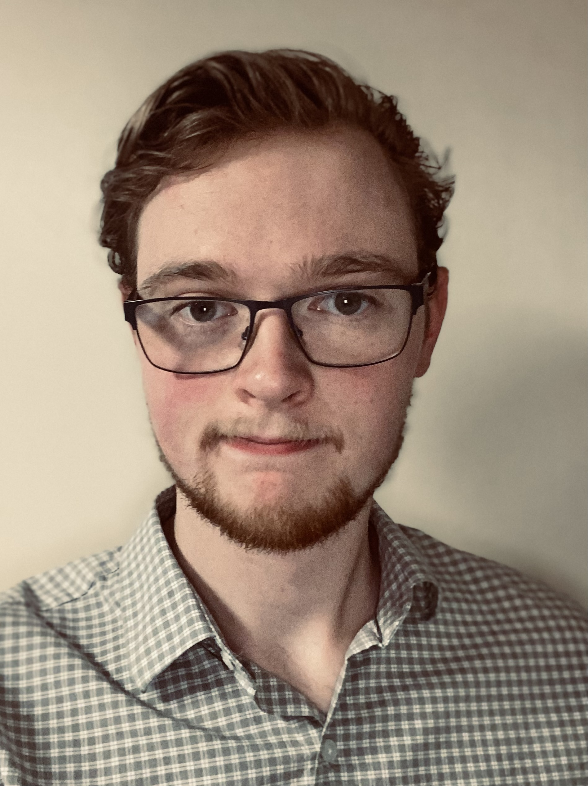
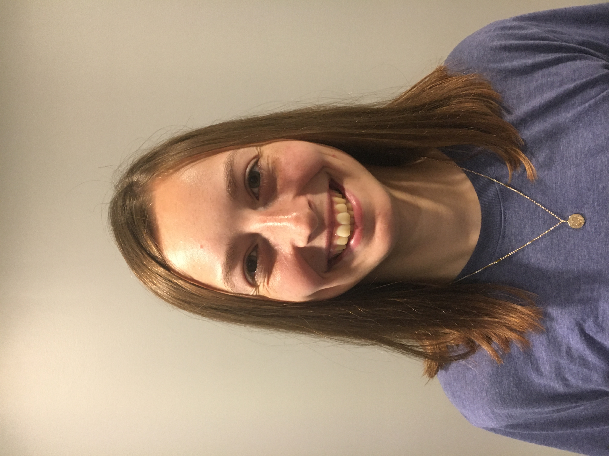
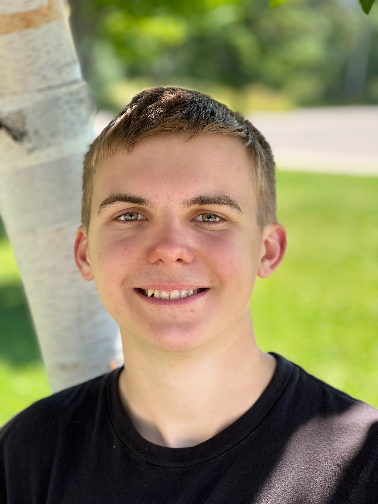

Olivia is a fourth-year PhD student and NSF GRFP Fellow at the Rochester Institute of Technology (RIT), currently working at the National Radio Astronomy Observatory (NRAO) Headquarters in Charlottesville, VA. She is the lead PI on the AAS mini-grant that funded the building of DLITE Ohio.
Chris Mentrek
Chris Mentrek is a naturalist at Observatory Park, DLITE Ohio’s host site.
Tim Dolch

Tim is a professor at Hillsdale College.
Joe Helmboldt
Joe is a Radio Astronomer at the U.S. Naval Research Laboratory in Washington, D.C., specializing in low-frequency (~10-400 MHz) interferometry and the use of cosmic radio sources to characterize structures within the ionosphere, the ionized portion of Earth’s upper atmosphere (~90-1,000 km altitude). He is the lead developer of the DLITE system.
DLITE Ohio Contributing Scientists
Louis Dartez
Dr. Louis Dartez is a postdoctoral researcher with the Caltech LIGO Laboratory. His background is in low-frequency radio astronomy and the DLITE-related instrument, the Low-Frequency All-Sky Monitor. Dr. Dartez has come to the DLITE OH site for the initial testing and has been working on the software component remotely.
Evan Bretl
DLITE Ohio Undergraduate Students
Colin Joyce

Colin Joyce is a Junior at Hillsdale College Double-majoring in Applied-Mathematics and Biochemistry. Having seen his first solar eclipse in 2017, Colin is thrilled to work on the DLITE project. After Hillsdale, Colin plans to attend medical school.
Paige Lettow

Paige Lettow is a Sophomore at Hillsdale College studying Physics and Mathematics.
Andrew Hawken

Andrew Hawken is a freshman physics student at Hillsdale College. Andrew has had a passion for astronomy since he was a kid, and has been involved with amateur astronomy groups and outreach for five years. Now that Andrew is at Hillsdale, he's excited to see what possibilities radio astronomy has to offer!
Johannes Loock
Johannes Loock is a student majoring in physics at Hillsdale College.
Ben Bassett
Benjamin Bassett is a freshman at Hillsdale College planning on majoring in physics and/or mathematics. Ben is also interested in computer science, engineering, and astronomy, and hence is fascinated by DLITE Ohio and the 2024 solar eclipse, a combination of all of the above.